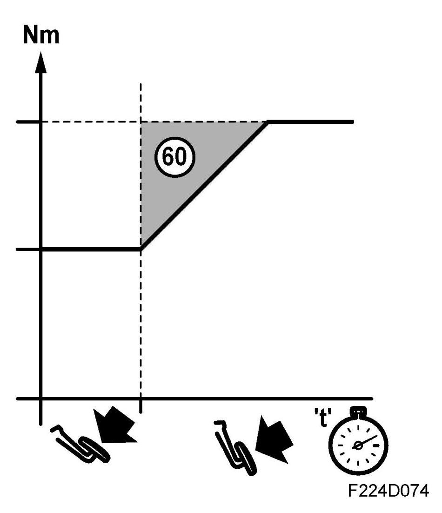

Emission-Dependent Torque Limitation, 6x
Emission-dependent Torque Limitation, 6x
General
The following function can reduce engine torque in order to reduce emissions:

- Transient control (60)
Current torque request / limitation can be read on the diagnostic tool. See read values Torque request
Emission limitation
Increases in engine torque can be limited in order to reduce emissions. A rapid increase in torque requires relatively high fuel enrichment, giving higher exhaust emissions.